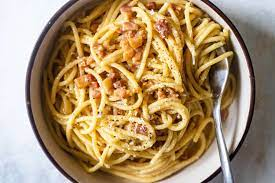

Spaghetti Carbonara recipe
Welcome to my site, today i will be showing you a recipe for Spaghetti Carbonara.

The Ingredients you will need:
- Salt
- 2 large eggs and 2 large yolks, room temp
- 1 ounce (about 1/3 packed cup) grated pecorino Romano
- 1 ounce (about 1/3 packed cup) grated parmesan
- Coarsely grounded black pepper
- 1 tablespoon olive oil
- 3 1/2 ounces of slab guanciale, pancetta or bacon, slice into pieces about 1/4 inches thick
- 12 ounces spaghetti (about 3/4 box)
And now for the recipe
- Place a large pot of lightly salted water (no more than 1 tablespoon salt) over high heat, and bring to a boil. Fill a large bowl with hot water for serving, and set aside.
- In a mixing bowl, whisk together the eggs, yolks and pecorino and Parmesan. Season with a pinch of salt and generous black pepper.